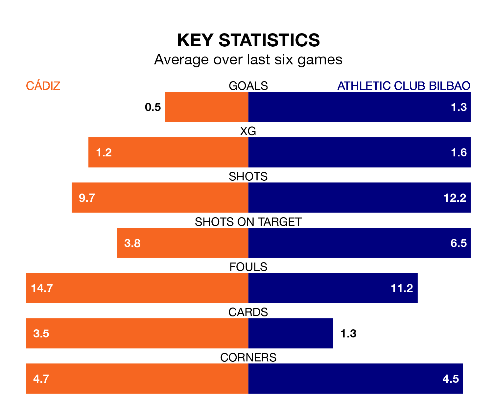

Struggling Cádiz face Athletic Club Bilbao at the Estadio Nuevo Mirandilla on Sunday looking to build on a win in their last league outing.
After securing all three points with a 0-1 victory over Deportivo Alavés on January 19, Cádiz sit 18th in La Liga.
They travel to play an Athletic side fourth in the standings, who lost in their last match, 1-0 against Valencia CF, on January 20.
In Unai Simón, Athletic can rely on one of the league's safest pair of hands. He has kept nine clean sheets in his 21 appearances this season, and no 'keeper has prevented the opposition scoring more often in La Liga.
In Cádiz's net, Jeremías Ledesma has two clean sheets in 18 games. He has conceded a goal every 67 minutes, 30% more often than the 90 minutes between goals for Simón Mendibil.
With 15 goals in 21 games so far this season, the hosts are the league's lowest scorers with 0.7 goals per game. And they are conceding more than average, letting in 31 goals at a rate of 1.5 per game.
The away side, meanwhile, are above average scorers, with 1.8 goals per game, compared to a league average of 1.3. They have conceded 1.0 goal per game.
Cádiz are in bad form in La Liga, with no wins and three draws from their last six games.
With four wins and a draw over that period, Athletic's form is much better – they have taken 13 points from 18, compared to Cádiz's three.
In the last 10 years, Cádiz and Athletic have played each other on seven occasions. Cádiz won two of them and Athletic five.
On average, Cádiz scored 0.7 goals and Athletic 2.6 in those matches.
Their last meeting was on September 16, when Athletic won 3-0 at home.
Updated: 08:51 (UTC), 25/01/24